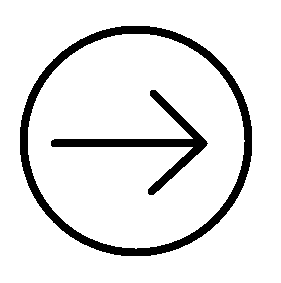
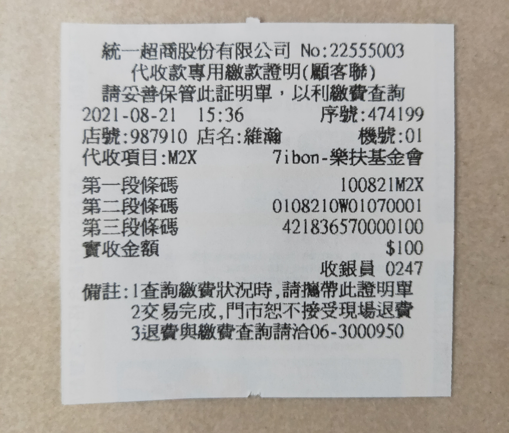
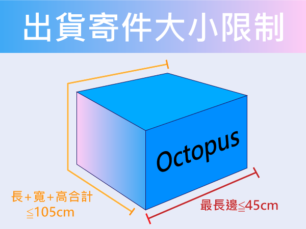

交易指南
捐款指南
交易問題
Q：捐款證明注意事項

- 捐款證明一律採用統一超商的ibon捐款小白單。

- ibon捐款規定最小金額100元上。
- 請確實收到訂單回覆，在完成捐款動作。
- 捐款證明收據的日期必須在訂單回覆過後的日期，
在訂單回覆前的日期收據一律不理會。
(以上條件未達成等捐款收據一律不採取與理會)
- 捐款證明方式：
即把捐款收據明細如上圖完整拍下，並確保捐款日期、
捐款金額、序號完整且清楚。再透過與網站聯繫方式傳送證明即可。
Q：我要如何確認訂單？
您送出訂單後，在「訂單回覆」的內容裡我們會提供物品數量與捐出總金額與您做確認。
Q：我可以取消訂單嗎？
我們不提供即時取消訂單，但若想取消訂單。可直接忽略此訂單的「訂單回覆」，
我們會再五日後自動視為棄單，取消此筆交易。
Q：要怎麼取貨？
我們提供兩項取貨選擇分別是「見面交貨」與「物流取貨」
1。面交(見面交貨)
面交範圍在桃園市桃園區內。
2。物流取貨
將物品寄送到指定7-11統一超商取貨，並自行承擔55元的運費。
Q：可以退貨嗎？
我們提供一個穩定且安全的交易平台，並透過Octopus的撮合促進關懷社會中的弱勢團體，
在雙方交易的過程中並非有實質獲利的一方。所有的金錢流動完全都會捐至公益團體，
希望各位能理解，我們並未提供交易後的退貨服務。
Q：一直未收到訂單回覆
未收到訂單回覆，有可能是因為下單的撮合失敗。下列為撮合失敗可能的原因：
1。庫存量不足。
2。下單時間晚於前者，導致庫存量不足。
3。無法聯繫到捐出者。
Q：交易注意事項
高高高
加入問題
Q：如何加入Octopus？
加入Octopus只需要點選上方連結欄位的「加入我們」並在填寫加入申請的表單。
就可以與我們聯絡了。您只要完成加入的申請，我們提供免費的上架服務在我們的網站。
您會在約五天內收到申請回覆訊息。就代表完成申請流程了。
Q：上架商品注意事項
以下種類物品，沒有提供上架服務：
1。生鮮
2。大型家俱
3。大型物品
由於寄件的大小限制，過大的物品無法透過物流出貨進行交易，建議材積最長邊≦45cm，
長+寬+高合計≦105cm，為合適的寄件大小。

上架的物品在交易後被反應與商品照不符，或是無法以正常機能運作，
經過審核確認後，我們將視為捐出者惡意交易，並將永久收回上架物品的所有權力。
上架物品需要的資料：
- 物品名稱
- 捐出價錢
- 物品大小(長寬高)
- 數量
- 出貨方式
- 物品註解
1。物品名稱：物品在網站上的名稱。
2。捐出價錢：交易此物品需要捐出的金額。
3。物品大小：物品的長寬高(過小物品不需提供)。
4。數量：物品捐出數量。
5。出貨方式：交易撮合後的出貨方式，往後可更改。
6。物品註解：物品其他相關資訊註解。
以上資料齊全繳交後，上架作業需約七天的時間。上架完成後本網站即會通知您。
Q：如果有人要我的物品？
如果有人在您的物品下訂單，我們會第一時間就聯繫捐出者，並開始引導您準備出貨的流程。
如果在聯繫捐出者的過程中超過一天內沒收到回覆，我們將視為您放棄此交易。
多次未連繫上的捐出者，本網站會斟酌考慮下架此捐出者的物品。
Q：我要怎麼出貨我的物品？
出貨方法可分為兩種，分別為「自行配送」與「物流配送」：
1。自行配送
請捐出者自行將貨物帶至地址：桃園市桃園區大有路547號(7-11大有門市)
2。物流配送
至統一超商交貨便服務，把貨物寄到7-11大有門市(地址同上)。
並自行承擔60元運費。
Q：我要如何下架商品？
直接聯繫網站，並列出下架商品即可。
Q：未收到加入申請的回覆
一直尚未收到加入申請的回覆可能有以下幾種狀況產生：
1。表單在申請的過程中遺失
在送出申請表單後，約14天以內尚未收到回覆即可考慮重新送出申請表單。
2。表單填寫資料有誤
聯繫方式等資料填寫有誤，導致回覆訊息尚未寄到正確的回覆管道，即可考慮重新送出表單。
其他問題
Q：物流配送相關須知
1。下單填寫的姓名、電話、信箱請確實填寫取貨人的真實資料，以防在領貨時造成誤會。
2。物流到達指定超商門市時，會寄通知簡訊到您留下的聯絡電話中。
3。每一筆到超商取貨需自行承擔55元運費。
4。捐出者在出貨時需自行承擔60元運費。
物流配送會以當天下單數量的總數，形成一筆訂單。例子如下：
小明1月1號下單了一個馬克杯，隔天1月2號又下單了一件衣服。
在1月1號23：59後我們就會把所有的訂單做結帳，小明1月2號下的訂單會被視為第二筆訂單。
在這個例子中，小明的馬克杯與衣服會被分開包裝並寄到指定的超商，而小明需要付兩次的運費。
Q：聯繫方式
高高高